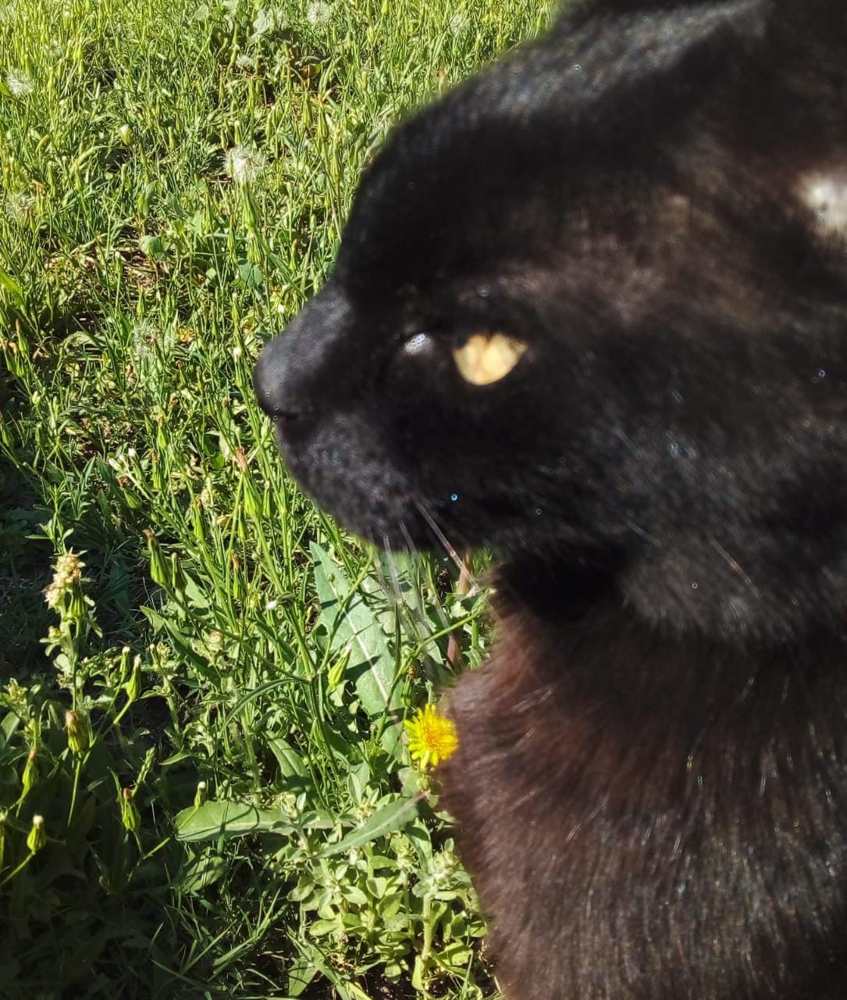

Coordinación
Federico Acosta Maneiro
Líder de Proyecto ~ Estructuración & Deploy
Líder de Proyecto ~ Estructuración & Deploy
Frontend & UI ~ Responsive, Animaciones & Accesibilidad
Maquetación de la bitácora, enlaces y recorrido entre secciones.

Ver perfilREADME, documentación técnica y registro del uso de IA.
Testing responsive, revisión de consola y optimización multimedia.